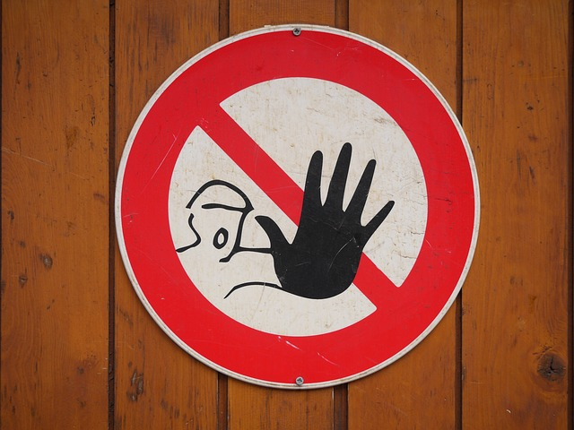
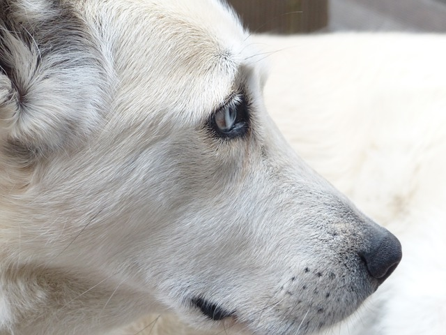

Animal cruelty should be stopped! No animal should be treated horribly and in a hideous way. Seeing how some animals are being treated makes ME feel horrible and wanting to make a BIG change in this world. Dogs, cats, elephants, lions, etc. are being mistreated by so many people and this world. Animals have feelings as well and knowing that people would do this to ANY creature makes my heart SINK! I have a question, why would anyone want to do this to a living creature? Knowing that we could make a really big change in this world, destroys me. I am very sad and disappointed that things like this are actually happening in this world. This is why I want to make a change and STOP Animal Cruelty.
There are so many reasons why Animal Cruelty should be stopped. One reason would be that it is just WRONG. It is also hurting animals and making them suffer in great pain. Home pets like dogs and cats get traumatized and won’t be able to trust anything or anyone again. Elephants are endangered because they are constantly being killed for their ivory tusks. Animal cruelty isn’t just only about the hitting, it is also emotional. If you don’t care for animals and mistreat them is basically animal cruelty. Torturing any animal is just sickening, imagine what they are going through, all that pain that they have to go through and they can’t speak up because they are weak unlike us. Animal Cruelty should be STOPPED!
We can stop animal cruelty by: